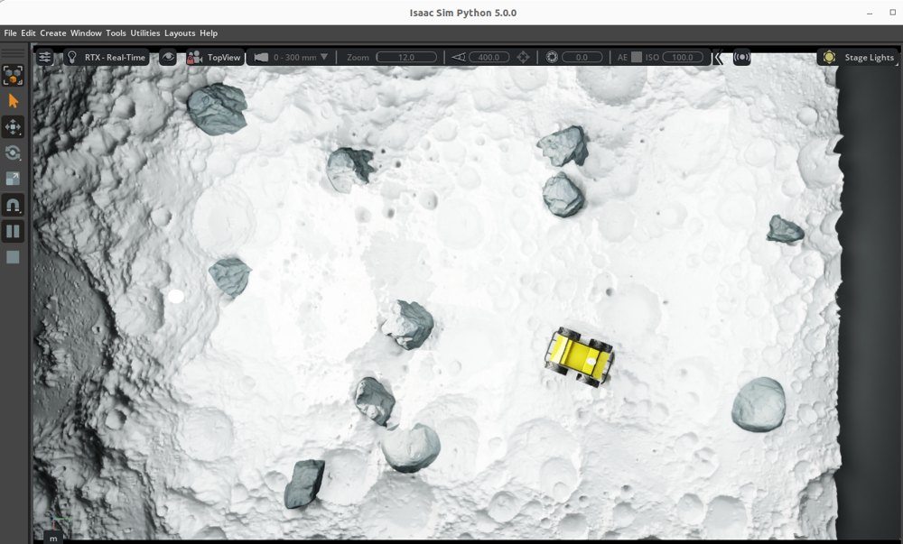
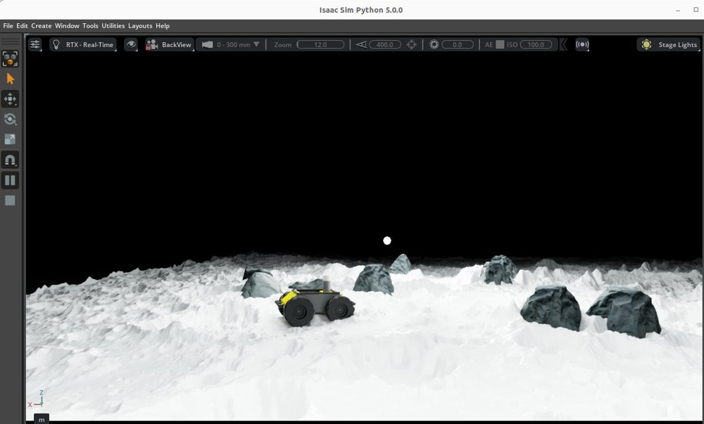
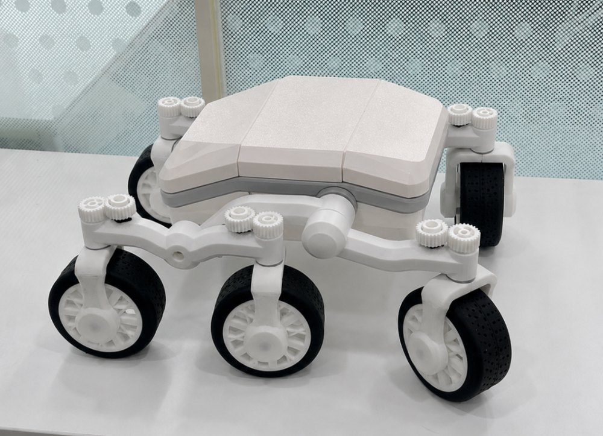
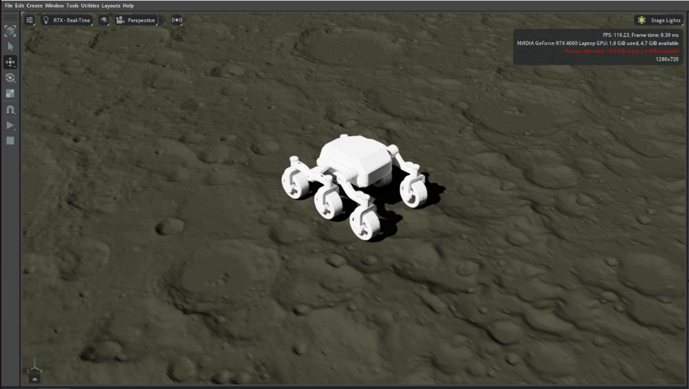
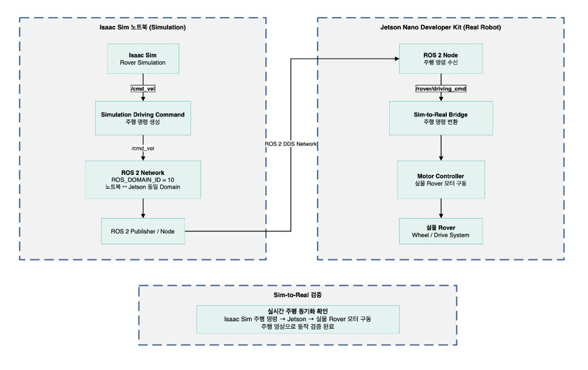

2026 1학기 ~ 여름방학
DEM Lunar Terrain Simulation
달 지형 시뮬레이션에서 실물 6륜 로커보기 로버까지
🏆 성과공유회 최우수상(1위)Overview
기간2026 1학기 (지형 시뮬레이션) → 여름방학 (교내 공학경진대회 준비)
분류교내 산학공동프로젝트 (선정 과제)
팀학부생 3명 — 달 지형 제작 / 로버 소프트웨어 / 나머지 공동
성과🏆 성과공유회 최우수상(1위)
역할OmniLRS 지형 교체·통합, 로커보기 로버 하드웨어 제작(기어·모터 암 재설계, 배선)
공개 달 표면·고도 데이터(LuSNAR)로 만든 3D 달 지형을 Isaac Sim 시뮬레이터에 넣어 로버를 달리게 하고, 여름방학에는 실물 6륜 로커보기 로버를 만들고 같은 로버를 시뮬레이션에 넣어, 둘을 연결하는 Sim-to-Real에 도전했습니다.
01 · Lunar Terrain Integration (1학기)


과정
- 팀원이 LuSNAR 데이터로 만든 달 지형을 OBJ · STL 메시로 받음
- 1차 — 빠른 확인: 이미 실행 중인 Lunaryard 장면에 지형을 import해서 크기·위치·충돌부터 확인
- 2차 — 정식 교체: OmniLRS 설정 파일과 지형 로딩 코드를 수정해, 기본 Lunaryard 지형 대신 우리 팀 지형이 바로 불러와지도록 교체
- OmniLRS 기본 로버인 Husky UGV로 크레이터를 지나가며 바퀴가 지면에 접지한 채 주행하는 것까지 확인
설계 핵심 · 배운 점
- 먼저 띄워 보고, 그다음 제대로 — 지형 로딩 구조가 복잡해서, 실행 중인 장면에 import로 먼저 검증하고 나서 설정·코드를 고쳐 정식으로 교체했습니다.
- 오픈소스 시뮬레이터 내부 구조 파악 — 지형이 어디서 어떻게 불러와지는지 직접 따라가 본 경험이, 이후 지형 변형(바퀴 자국) 엔진 작업의 바탕이 됐습니다.
- 한계 — 접지는 육안으로만 확인했고, 지형이 강체라 바퀴가 파묻히거나 자국이 남는 효과는 없었습니다. 이 한계가 이후 지형 변형 연구로 이어졌습니다.
02 · 6-Wheel Rocker-Bogie Rover (여름방학)



교내 공학경진대회 출품작 「Isaac Sim·ROS2 기반 6륜 달 탐사 로버의 고충실도 시뮬레이션 환경 구축 및 Sim-to-Real 연구」를 준비하며 진행했습니다.
하드웨어
- 오픈소스 로커보기 모델(Printables 공개 모델, DTU RoboCup 계단 등반 로버)을 기반으로 3D 프린팅·조립
- 구동 모터 6개 + 조향 서보 6개, 제어는 Jetson Orin Nano
- Fusion 360 재설계 — 서보 위 기어의 규격이 맞지 않아 수정, 모터 크기에 맞춰 motor arm을 다시 팜
- 실물 로버 단독 주행 확인
시뮬레이션 · Sim-to-Real
- Blender에서 휠 계층(WHL_FL/FR/ML/MR/RL/RR) 정리 → USD 변환 → Isaac Sim 물리 조인트 적용
- 우리 팀 달 지형과 평지·험지·경사·모래 지형에서 주행 확인
- 드라이브 모드 3종 실시간 전환 — 종방향(직진), 횡방향(크랩), 제자리 회전 (키보드·조이스틱, 시뮬레이션 내)
- Sim-to-Real (미완성) — Isaac Sim 노트북과 Jetson의 ROS2 Domain ID를 맞춰 시뮬레이션 구동 명령(/rover_driving_cmd)을 실물 모터로 보내는 구조를 설계했습니다. 시뮬레이션 명령으로 실물 모터 1개가 움직이는 것까지 확인했고, 6륜 전체 동기화는 완성하지 못했습니다.
설계 핵심 · 배운 점
- 오픈소스를 그대로 쓰지 않고 내 부품에 맞추기 — 실제로 구한 서보·모터와 규격이 달라, 기어와 motor arm을 직접 고쳐 맞췄습니다.
- 배선이 곧 설계 — 서보 6개에 모터 6개까지 선이 12갈래라 정리가 가장 힘들었습니다. 다음 설계에서는 배선 경로를 처음부터 기구에 넣어야 한다는 걸 배웠습니다.
- 끝내지 못한 것 — Sim-to-Real 동기화는 완성하지 못했습니다. 실물과 USD 모델을 같은 휠 계층으로 맞춰 둔 것이 다음 시도의 출발점입니다.